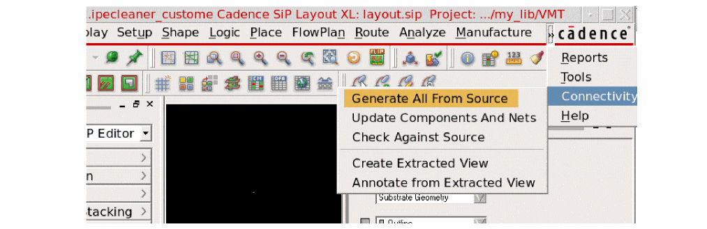
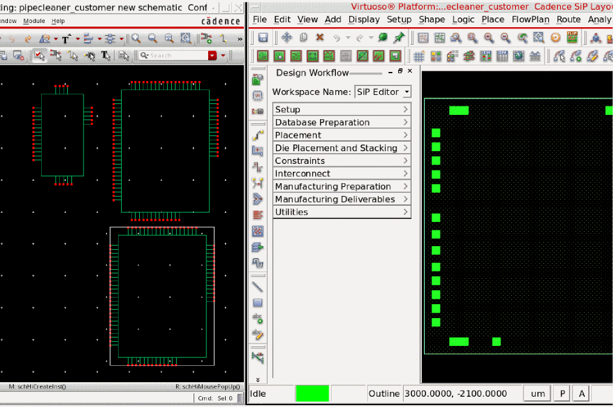

Generating from Source Schematic
This topic lists the steps to generate the SiP layout from the package schematic in Virtuoso. You can use the Connectivity menu available in the SiP layout to create the physical layout in SiP. The capabilities include cross-selecting components in schematic and highlighting them in the layout and conversely, cross-selecting components in layout and highlighting them in the schematic.
-
Choose Connectivity – Generate All from Source.
 -
Click various instances in Virtuoso Schematic Editor and see how the corresponding symbol in Cadence SiP Layout is zoomed-in, selected, and highlighted.

You can use the Scribe Lines feature that shows the physical extents of the actual manufactured die. This includes the scribe area outside the design extents that is part of the wafer scribe or sawing process. For details, refer to Scribe Lines Feature.
Return to top